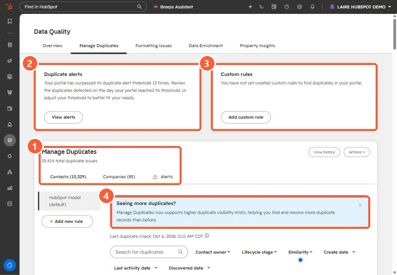
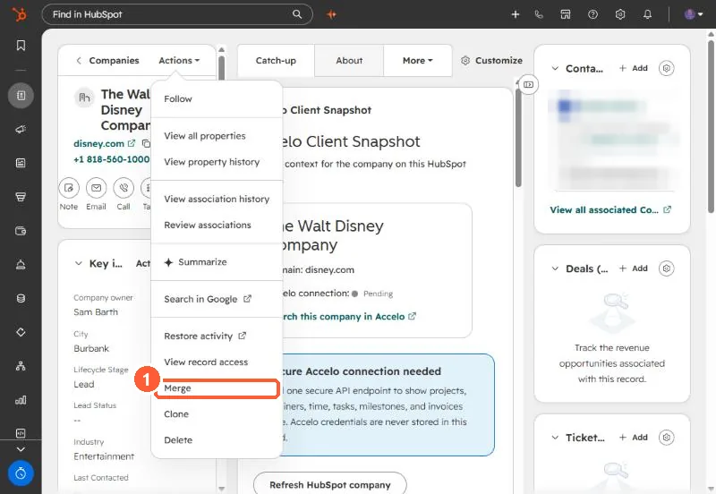
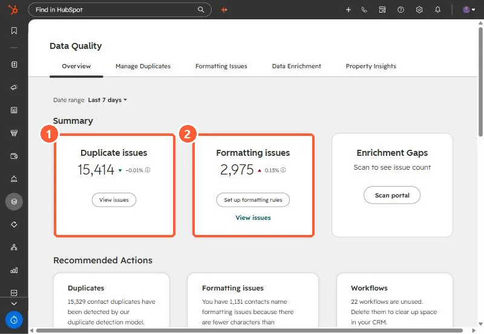
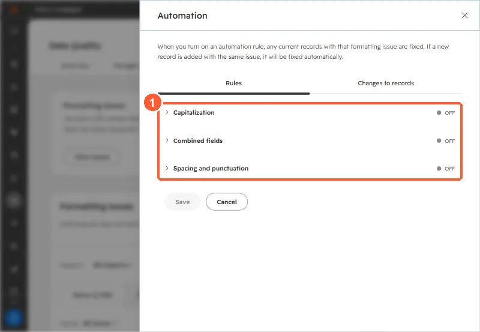

Short answer
HubSpot automatically deduplicates contacts by email and companies by domain, and nothing else. Everything else lands in Data Quality, Manage Duplicates as suspected pairs (Professional or Enterprise, up to 10,000 pairs shown), where you merge or reject. Bulk merging and custom duplicate rules need Data Hub Professional or Enterprise. Merges cannot be undone: the primary record's values win, empty ones are filled from the other. Phone duplicates, placeholder emails from call tracking, and companies created by sync apps all slip past the automatic checks, so fix the source as well as the records.
1. The duplicates tool
Go to Data Management, Data Quality, Manage Duplicates. It shows totals per object (1), duplicate alerts (2), custom rules (3), and a notice about visibility limits (4). My demo portal shows 15,414 duplicate issues: 15,329 contacts and 85 companies.


| Feature | Needs |
|---|---|
| Review and merge individual pairs, up to 10,000 shown | Professional or Enterprise |
| Bulk merge | Data Hub Professional or Enterprise |
| Custom duplicate rules (up to two per object, up to nine properties) | Data Hub Professional or Enterprise |
| Duplicate alerts when a daily threshold is passed | Data Hub Professional or Enterprise |
For contacts, HubSpot's default comparison uses first name, last name, email, phone number, zip code, company name and IP country. You need Data quality tools access and edit access to the records, or Super Admin.
Work in slices: filter by owner, lifecycle stage, similarity, or create and activity dates, start with the highest similarity, and reject pairs that are genuinely different so they stop coming back.
2. Merge two records
On a record, open Actions, Merge (1):


- Activities and associations from both records combine.
- The primary record's property values win. An empty primary value is filled from the secondary.
- Exceptions include Record ID, Create date and some contact and company properties. Where offered, you choose the value.
- Logged playbooks carry over; drafts do not.
- With Salesforce syncing, only the primary keeps syncing, so make the synced record the primary. See Salesforce sync.
- A record that has been part of 250 or more merges cannot be merged again.
3. You cannot unmerge
HubSpot cannot split a merged record. What you can do:
- The Merged record IDs property lists which records were merged in.
- An export covers pre-merge property values and timestamps for merges in the last 90 days, and merge history exports from the duplicates tool.
- For contacts and companies, create a new record with the email or domain that was merged away, and move what belongs to it.
Before a bulk merge, write the list of pairs to a file and note the count.
4. Duplicates HubSpot does not catch
Phone numbers. HubSpot does not deduplicate on phone, so (555) 123-4567 and +15551234567 sit on two records with no flag. Data Quality's formatting issues (2) cover name, email and location problems, and its automation rules (1) cover capitalization, combined fields, and spacing and punctuation, not phone formats.




- Export Record ID, email, Phone number and Mobile phone number.
- Reduce each number to digits with the country code.
- Group by the result. Every group of two or more is a candidate.
- Review each group by name and email. Phone alone is not enough to merge: households and shared office lines are real.
To keep new numbers consistent, turn on Validate phone numbers for this property on the property's Rules tab. Validated numbers are saved unformatted (for example +18884827768) and displayed in the regional format. Existing values are not reformatted, and the default country code currently only applies to imports.
Call tracking placeholders. Call tracking tools often create a contact with an auto-generated email when the caller does not match one. That never matches the real contact, so calls and texts split across two records that only share a phone number. Sort each group: same person with a messy name (clean, confirm, merge), a carrier label or city typed into the name (confirm before merging), and different people on one number (leave alone). Then fix the source, for example by turning off automatic contact creation in the tool or adding a custom duplicate rule on phone plus a cleaned name.
Companies from the API. Manual creation warns when the domain matches an existing company, and imports deduplicate on primary and secondary domains. Companies created through the API, including sync apps, are not deduplicated by domain. When several companies share a domain, automatic association links contacts to only one of them, and you cannot choose which. Merge real duplicates; use parent and child companies for real branches.
Imports. Rows without an email, domain or Record ID become new records. See imports. Scripts that create instead of upsert do the same, see upserting through the API.
5. What is changing for 2027
- Data Hub owns the heavy tools. Bulk merge, custom rules and alerts sit in Data Hub Professional and Enterprise. Review pair by pair stays in Professional and Enterprise of other hubs.
- Validation at entry. Phone validation and formatting rules stop new duplicates, but do not clean old values. Run a one-time cleanup, then rely on validation.
- Check integrations before turning them on. Companies created through the API skip domain dedupe, so look at each new integration's record creation settings first.
Common questions
Can I undo a merge?
No. Use the Merged record IDs property and the pre-merge export (last 90 days) to rebuild what you need.
Why does HubSpot not flag contacts with the same phone number?
Automatic deduplication only uses email for contacts. Phone is part of the duplicate tool's comparison, but different formats can keep pairs from matching.
Which record's values are kept?
The primary's, except Record ID, Create date and some properties, with empty primary values filled from the secondary.
Do I need Data Hub to merge duplicates?
Not for one pair at a time on Professional or Enterprise. Bulk merging and custom rules need Data Hub Professional or Enterprise.
Sources
- HubSpot Knowledge Base: Review and manage duplicate records
- HubSpot Knowledge Base: Merge records
- HubSpot Knowledge Base: Deduplicate records in HubSpot
- HubSpot Knowledge Base: Use data quality tools
- HubSpot Knowledge Base: Set up phone number property validation
- HubSpot Knowledge Base: Set validation rules for a property
- HubSpot Knowledge Base: Automatically create and associate companies with contacts